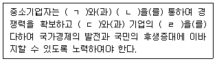
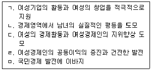
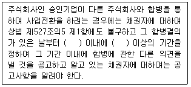
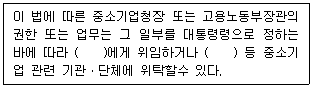
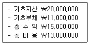
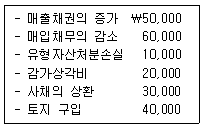
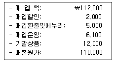
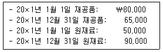
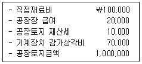

경영지도사-1차-1교시(구) (2013-05-18 기출문제)
1과목: 중소기업관련법령
1. 중소기업기본법상 중소기업청장이 국세청장에게 과세정보의 제출을 문서로 요청하는 경우 명시해야 하는 사항이 아닌 것은?
- 상시 근로자 수, 매출액
- 납입자본금, 자본잉여금
- 배당가능이익, 준비금
- 자기자본(자산총액-부채총액)
- 주주현황 및 다른 법인에 대한 출자현황
(정답률: 알수없음)

2. 중소기업기본법상 정부가 중소기업을 육성하기 위하여 매년 중소기업시책에 관한 계획을 수립하여 3월까지 제출해야 하는 곳은?
- 청와대
- 감사원
- 중소기업청
- 국회
- 공정거래위원회
(정답률: 알수없음)
3. 중소기업기본법 제4조(중소기업자 등의 책무)의 내용으로 ( )에 들어갈 용어로 옳은 것은?

- ㄱ: 경영혁신, ㄴ: 기술개발, ㄷ: 생산성 향상, ㄹ: 성장
- ㄱ: 원가절감, ㄴ: 기술개발, ㄷ: 경영혁신, ㄹ: 사회적 책임
- ㄱ: 원가절감, ㄴ: 기술개발, ㄷ: 투명한 경영, ㄹ: 생산성 향상
- ㄱ: 판로확대, ㄴ: 유통혁신, ㄷ: 경영혁신, ㄹ: 윤리적 경영
- ㄱ: 기술개발, ㄴ: 경영혁신, ㄷ: 투명한 경영, ㄹ: 사회적 책임
(정답률: 알수없음)
4. 중소기업기본법상 중소기업 실태조사에 관한 설명으로 옳지 않은 것은?
- 정부는 해당 실태조사와 관련 있는 사안에 필요한 경우에는 여성기업지원에 관한 법률에 따른 실태 조사와 통합하여 실시할 수 있다.
- 정부로부터 실태조사를 위한 협조를 요청받은 중소기업자는 특별한 사유가 없는 한 이에 따라야 한다.
- 정부는 중소기업 실태조사를 직접 실시하여야 하며, 그 결과를 공표하여야 한다.
- 정부가 실태조사를 통합하여 실시하는 때에는 중소기업 실태조사 통합 실시계획을 수립하여 이에 따라 실태조사를 하여야 한다.
- 정부의 중소기업 실태조사는 매년 정기적으로 행해져야 한다.
(정답률: 알수없음)
5. 중소기업창업 지원법상 중소기업 창업의 승인 및 취소에 관한 설명으로 옳지 않은 것은?
- 군수가 사업계획의 승인을 할 때에는 그 공장의 건축면적이 산업집적활성화 및 공장설립에 관한 법률에 따른 기준공장면적률에 적합하도록 해야한다.
- 시장이 사업계획의 승인 신청을 받은 날부터 20일 이내에 승인 여부를 알리지 아니한 때에는 20일이 지난 날에 승인한 것으로 본다.
- 군수는 사업계획의 승인을 받은 자가 일정한 사유에 해당하면 사업계획의 승인과 공장 건축허가를 취소할 수 있다.
- 시장의 원상회복명령에 위반하여 원상회복을 하지 아니하면 대집행에 따라 원상회복을 할 수 있다.
- 군수는 사업계획의 승인을 취소하려면 청문을 하여야 한다.
(정답률: 알수없음)
6. 중소기업창업 지원법상 중소기업청장이 할 수 있는 업무가 아닌 것은?
- 창업민원처리기구의 설치
- 재택창업지원시스템의 설치ㆍ운영
- 청년기업가정신 재단법인에 대한 출연
- 중소기업창업투자회사 임직원에 대한 문책의 요구
- 창업진흥전담조직의 설치
(정답률: 알수없음)
7. 중소기업창업 지원법상 중소기업창업투자회사에 관한 설명으로 옳지 않은 것은?
- 중소기업창업투자회사의 등록요건은 납입자본금이 100억원 이상이어야 하며, 이를 공시하여야 한다.
- 중소기업창업투자회사는 조직과 인력에 관한 사항을 공시하여야 한다.
- 중소기업창업투자회사는 재무와 손익에 관한 사항을 공시하여야 한다.
- 중소기업창업투자회사는 중소기업창업투자조합의 결성 및 운영 성과에 관한 사항을 공시하여야 한다.
- 중소기업창업투자회사는 시정명령과 경영개선 등의 조치를 받은 경우 그 조치에 관한 사항을 공시하여야 한다.
(정답률: 알수없음)
8. 중소기업창업 지원법상 중소기업청장에 의한 창업촉진 및 지원에 해당하지 않는 것은?
- 창업자의 우수한 아이디어 사업화에 대한 지원
- 중소기업창업민원실의 운영
- 창업교육
- 유망한 예비사업자의 발굴ㆍ육성 및 그에 대한 지원
- 창업 기반시설의 확충
(정답률: 알수없음)
9. 중소기업창업 지원법상 중소기업창업투자조합의 해산사유가 아닌 것은?
- 창업투자조합의 결성목적이 달성되었다고 조합원 과반수가 동의하는 경우
- 업무집행조합원인 창업투자회사의 등록이 취소되거나 파산 등으로 인하여 업무수행을 계속하기가 곤란한 경우
- 존속기간의 만료
- 중소기업창업투자회사인 업무집행조합원 전원의 탈퇴
- 중소기업창업투자회사인 업무집행조합원 전원의 등록의 말소
(정답률: 알수없음)
10. 중소기업창업 지원법상 중소기업창업투자조합에 관한 설명으로 옳지 않은 것은?
- 조합을 결성하는 경우 대통령령으로 정하는 바에 따라 중소기업청장에게 등록해야 한다.
- 조합은 조합의 채무에 대해 무한책임을 지는 1인 이상의 조합원과 출자액을 한도로 하여 유한책임을 지는 유한책임조합원으로 구성된다.
- 조합의 업무는 무한책임을 지는 조합원과 유한책임을 지는 조합원이 협의하여 집행한다.
- 조합원은 조합규약이 정하는 바에 따라 출자금액의 전액을 나누어 출자할 수도 있다.
- 무한책임을 지는 조합원도 조합원 전원의 동의가 있으면 탈퇴할 수 있다.
(정답률: 알수없음)
11. 벤처기업육성에 관한 특별조치법상 신기술사업금융업자가 한국벤처투자조합을 결성할 때 작성하는 결성계획서의 기재사항이 아닌 것은?
- 사업의 개요
- 사무소의 소재지
- 출자의 시기 및 방법
- 자산운용계획 및 배분계획
- 투자심사업무를 전담하는 전문인력의 인적사항
(정답률: 알수없음)
12. 벤처기업육성에 관한 특별조치법상 기술평가기관에 해당되지 않는 것은?
- 한국산업기술진흥원
- 한국산업기술평가관리원
- 기술정보진흥원
- 정보통신산업진흥원
- 기술신용보증기금
(정답률: 알수없음)
13. 벤처기업육성에 관한 특별조치법에 관한 설명으로 옳은 것은?
- 벤처기업에 대한 현물출자 대상에는 산업재산권(특허권ㆍ실용신안권ㆍ디자인권 그 밖에 이에 준하는 기술과 그 사용에 관한 권리)을 포함하지 않는다.
- 기술신용보증기금은 신기술창업전문회사에 우선적으로 신용보증을 하여야 한다.
- 외국인투자촉진법에 따른 외국인이 행하는 중소기업창업투자조합이나 한국벤처투자조합에 대한 출자는 내국인투자로 본다.
- 한국벤처투자조합은 업무집행조합원에게 어떠한 경우라도 투자수익에 다른 성과보수를 지급할 수 없다.
- 한국벤처투자조합의 해산 당시의 출자금액을 초과하는 채무가 있어도 업무집행조합원이 그 채무를 변제해야 하는 것은 아니다.
(정답률: 알수없음)
14. 벤처기업육성에 관한 특별조치법상 용어의 정의에 관한 설명으로 옳지 않은 것은?
- 투자란 주식회사가 발행한 주식, 무담보전환사채 또는 무담보신주인수권부사채를 인수하거나, 유한회사의 출자를 인수하는 것을 말한다.
- 벤처기업집적시설이란 벤처기업 및 대통령령으로 정하는 지원시설을 집중적으로 입주하게 함으로써 벤처기업의 영업활동을 활성화하기 위하여 지정된 건축물을 말한다.
- 전략적제휴란 벤처기업이 생산성 향상과 경쟁력 강화 등을 목적으로 기술ㆍ시설ㆍ정보ㆍ인력 또는 자본 등의 분야에서 다른 기업의 주주 또는 다른 벤처기업과 협력관계를 형성하는 것을 말한다.
- 실험실공장이란 벤처기업의 창업을 촉진하기 위하여 대학 이외의 연구기관이 보유하고 있는 연구시설에 설치된 공장을 말한다.
- 신기술창업전문회사란 대학이나 연구기관이 보유하고 있는 기술의 사업화와 이를 통한 창업 촉진을 주된 업무로 하는 회사로서 등록된 회사를 말한다.
(정답률: 알수없음)
15. 벤처기업육성에 관한 특별조치법상 신기술창업전문회사를 설립할 수 있는 곳이 아닌 곳은?
- 대학
- 국공립연구기관
- 정부출연연구기관
- 산업기술혁신 촉진법에 따른 전문생산기술연구소
- 상법에 따라 설립된 영리법인으로서 과학 또는 산업기술 분야 연구기관
(정답률: 알수없음)
16. 벤처기업육성에 관한 특별조치법상 벤처기업의 육성을 위해 국가나 지방자치단체가 감면할 수 있는 조세에 해당하지 않는 것은?
- 소득세
- 법인세
- 등록면허세
- 개별소비세
- 취득세
(정답률: 알수없음)
17. 중소기업진흥에 관한 법률상 중소기업창업 및 진흥기금(이하 ‘기금’이라 한다)에 관한 설명으로 옳지 않은 것은?
- 중소기업진흥공단은 이사회의 의결을 거친 후 기획재정부장관과 협의를 마친 중소기업청장의 승인을 받아 기금의 부담으로 채권을 발행할 수 있다.
- 채권의 발행액은 적립된 기금의 20배를 초과할 수 없으며, 정부는 중소기업진흥공단이 발행하는 채권 원리금의 상환을 보증할 수 있다.
- 정부는 회계연도마다 예산의 범위에서 출연금과융자금을 세출예산에 포함시켜야 한다.
- 중소기업진흥공단은 회계연도마다 기금의 결산 결과 이익금이 생긴 경우에는 이월손실금의 보전에 충당하고, 나머지는 기금으로 적립하여야 한다.
- 기금의 결산에서 손실금이 생긴 때에는 이월이익금으로 보전하고 그 이월이익금이 부족한 때에는 정부가 이를 보전한다.
(정답률: 알수없음)
18. 중소기업진흥에 관한 법률상 정부의 협업사업 지원에 포함되지 않는 것은?
- 협업자금 지원
- 정보제공
- 사업전환 지원
- 인력양성 및 지도ㆍ연수
- 정보화 촉진
(정답률: 알수없음)
19. 중소기업진흥에 관한 법률상 중소기업에 대한 지원에 관한 설명으로 옳지 않은 것은?
- 중소기업청장은 관련 기업의 노사분규로 휴업ㆍ폐업 또는 조업중단 등의 사태가 발생한 경우 중소기업의 경영정상화를 지원하기 위하여 필요한 조치를 할 수 있다.
- 중소기업청장은 긴급경영안정지원계획을 수립하려는 경우에는 관계 중앙행정기관의 장과 협의하여야 하며 관계 중앙행정기관의 장에게 지원계획 추진실적 제출을 요청할 수 있다.
- 중소기업청장은 중소기업의 사회적책임경영을 효율적으로 지원하기 위하여 중소기업 지원 관련 기관이나 단체를 사회적책임경영 중소기업지원센터로 지정할 수 있다.
- 중소기업창업 및 진흥기금은 중소기업청장이 운용ㆍ관리한다.
- 정부는 중소기업자가 생산시설을 해외로 이전하려는 경우 무역보험법에 따른 해외투자보험의 지원을 할 수 있다.
(정답률: 알수없음)
20. 중소기업진흥에 관한 법률을 위반한 경우 징역등형벌이 부과되는 대상자는?
- 동법을 위반하여 고의로 진실을 감추거나 거짓된 보고를 한 지도사
- 동법을 위반하여 지도사임을 표시하거나 이와 비슷한 명칭을 사용한 자
- 현재 자기가 사용인이거나 과거 1년 이내에 자기가 사용인이었던 자에 대해 증명업무를 수행한 자
- 동법을 위반하여 중소기업진흥공단 또는 이와 비슷한 명칭을 사용한 자
- 동법에 따른 보고를 하지 아니하거나 거짓된 보고를 한 자 또는 검사를 거부, 방해 또는 기피한 자
(정답률: 알수없음)
21. 중소기업진흥에 관한 법률상 중소기업의 경영기반을 확충하기 위한 협동화 사업에 관한 설명으로 옳지 않은 것은?
- 중소기업청장은 중소기업자의 집단화와 시설공동화 등을 위한 중소기업 협동화기준을 정하고 고시하여야 한다.
- 협동화기준에 따라 협동화실천계획을 세워 시행하려는 자는 중소기업청장의 승인을 받아야 한다.
- 협동화실천계획의 승인을 받은 자가 사업목적을 달성할 수 없는 경우 계획의 승인을 취소하고 지원자금의 원리금을 회수할 수 있다.
- 협동화실천계획에 형질변경을 수반하는 면적 3만제곱미터 이상의 단지조성사업이 포함되는 경우에는 국토해양부장관(국토교통부장관)의 승인을 받아야 한다.
- 단지조성사업의 실시계획이 승인된 지역 안의 국유지 또는 공유지는 중소기업자등에게 수의계약으로 매각할 수 있다.
(정답률: 알수없음)
22. 중소기업진흥에 관한 법률상 지도사에 관한 설명으로 옳지 않은 것은?
- 금고 이상의 형을 선고받고 그 집행이 끝난 후 2년이 지나지 아니한 자는 지도사가 될 수 없다.
- 국가기술자격법에 따른 기술사는 지도사시험의 1차시험을 면제한다.
- 지도실적이 부족한 지도사는 지도사등록이 취소된다.
- 지도사는 과거 1년 이내 자기가 임원이었던 중소기업에 대하여 경영 및 기술 진단에 수반되는 증명업무를 행하지 못한다.
- 중소기업청장은 지도사의 수요 등을 고려하여 지도사 양성을 위하여 필요하다고 인정하면 주관기관을 정하여 지도사 양성과정을 운영하게 할 수있다.
(정답률: 알수없음)
23. 중소기업 기술혁신 촉진법상 중소기업 기술혁신 촉진계획 및 추진에 관한 설명으로 옳지 않은 것은?
- 중소기업 기술혁신 촉진계획은 3년 단위로 수립한다.
- 중소기업 기술혁신 촉진계획에는 중소기업의 기술인력 양성ㆍ활용 및 교육에 관한 사항 등이 포함되어야 한다.
- 중소기업 기술진흥전문기관은 중소기업의 기술혁신을 촉진하기 위한 수요조사를 수행한다.
- 중소기업 기술통계에는 중소기업의 기술경쟁력 및 기술수준의 내용이 포함되어야 한다.
- 중소기업 기술혁신 추진위원회의 위원장은 민간위원 중에서 호선(互選)한다.
(정답률: 알수없음)
24. 중소기업 기술혁신 촉진법상 중소기업기술정보진흥원의 사업에 해당하지 않는 것은?
- 중소기업 기술혁신 기반조성
- 중소기업 정보화 촉진 관련 정보기술의 보급
- 정보화경영 표준모델과의 부합화 지원
- 중소기업 기술혁신사업의 수요 발굴
- 기금의 운용과 관리
(정답률: 알수없음)
25. 중소기업 기술혁신 촉진법상 중소기업의 생산환경을 개선하여 중소기업으로의 인력 유입을 촉진하고 생산성 향상을 도모하기 위하여 추진할 수 있는 사업으로 옳지 않은 것은?
- 기업의 생산환경 개선을 위한 실태조사
- 기업의 생산환경 개선을 위한 장비의 개발
- 기업의 경쟁력을 높이기 위하여 활용중인 중요한 부분의 개선
- 쾌적한 작업환경의 조성을 위한 시설투자의 지원
- 기업의 생산성 향상을 위한 신공정 개발
(정답률: 알수없음)
26. 중소기업 기술혁신 촉진법상 중소기업청장은 기술혁신사업이나 산학협력 지원사업이 완료된 경우에는 출연한 금액의 일정범위에서 사업자로부터 기술료를 징수할 수 있는데, 이 때 징수할 수 있는 범위는?
- 50% 이내의 범위
- 60% 이내의 범위
- 70% 이내의 범위
- 80% 이내의 범위
- 90% 이내의 범위
(정답률: 알수없음)
27. 여성기업지원에 관한 법률 제1조(목적)에 명시적으로 규정된 내용으로 옳은 것을 모두 고른 것은?

- ㄱ, ㄴ, ㄹ
- ㄱ, ㄴ, ㄷ, ㅁ
- ㄱ, ㄴ, ㄷ, ㄹ, ㅁ
- ㄴ, ㄷ, ㄹ, ㅁ
- ㄷ, ㄹ, ㅁ
(정답률: 알수없음)
28. 여성기업지원에 관한 법률상 여성기업에 관한 설명으로 옳지 않은 것은?
- 상법상의 회사로서 여성이 당해 회사의 대표권 있는 임원(회사대표)으로 등기되어 있는 회사는 여성기업이다.
- 회사대표가 수인(공동대표)인 경우에는 여성인 공동대표가 소유하는 주식의 수가 남성인 공동대표가 소유하는 주식의 수보다 많거나 같은 회사는 여성기업이다.
- 여성인 공동대표가 소유하는 여성기업의 주식에는 출자지분은 포함되나 의결권 없는 주식은 포함되지 아니한다.
- 여성이 소득세법에 의거하여 사업자 등록을 한 사업체는 여성기업이다.
- 여성이 부가가치세법에 의거하여 사업자 등록을 한 사업체는 여성기업이다.
(정답률: 알수없음)
29. 소기업 및 소상공인지원을 위한 특별조치법에 관한 내용으로 옳지 않은 것은?
- 소상공인이란 소기업 중 상시 근로자가 10명 미만인 사업자로서 업종별 상시 근로자 수 등이 대통령령으로 정하는 기준에 해당하는 자를 말한다.
- 소기업에 대한 임금채권 우선변제의 적용범위는 최종 3월분의 임금 및 최종 3연간의 퇴직금과 재해보상금으로 한다.
- 중소기업청장은 3년마다 소상공인육성시책의 수립에 필요한 실태조사를 하고 그 결과를 공표하여야 한다.
- 중소기업청장은 필요한 경우 주식회사의 설립을 희망하는 소기업에 대한 자금, 경영 등의 지원방안을 수립할 수 있다.
- 정부는 전통시장 상인 등 소상공인의 경영안정과 구조고도화를 통한 성장 지원에 필요한 재원을 확보하기 위하여 중소기업창업 및 진흥기금에 소상공인진흥계정을 설치한다.
(정답률: 알수없음)
30. 소기업 및 소상공인지원을 위한 특별조치법상 소기업 지원에 관한 설명으로 옳지 않은 것은?
- 중소기업청장은 소기업 제품의 판매 촉진을 위한 사업을 할 수 있다.
- 소기업을 100분의 50 이상 유치하는 농공단지를 조성하는 경우에는 농지법상 농지보전부담금을 면제한다.
- 정부는 소기업에 대한 신용보증 지원시책을 수립ㆍ시행하여야 한다.
- 중소기업청장은 3년마다 소기업 지원계획을 수립ㆍ시행하여야 한다.
- 소기업을 100분의 50 이상 유치하는 일반산업단지를 조성하는 경우에는 산지관리법상 대체산림자원조성비를 면제한다.
(정답률: 알수없음)
31. 중소기업 사업전환 촉진에 관한 특별법상 중소기업 사업전환 계획의 승인 기준에 해당하지 않는 것은?
- 사업전환계획이 사업전환의 범위에 해당하여야 한다.
- 사업전환계획의 승인을 받으려는 중소기업자가 중소기업 사업전환 촉진에 관한 특별법의 적용범위에 해당하여야 한다.
- 사업전환계획의 이행방법이 구체적이고 실현 가능하여야 한다.
- 새로 운영하거나 추가하려는 업종이 제조업 및 서비스업(한국표준산업분류상 농업, 임업, 어업, 광업, 제조업, 전기ㆍ가스ㆍ증기 및 수도사업과 건설업을 제외한 업종을 말한다)에 포함되고, 중소기업창업 지원법상의 업종에 해당하지 아니하여야 한다.
- 사업이 전환되어도 주식회사의 형태를 취해야 한다.
(정답률: 알수없음)
32. 중소기업 사업전환 촉진에 관한 특별법상 중소기업사업전환지원센터의 업무에 해당하지 않는 것은?
- 사업전환의 승인을 받은 중소기업자에 대한 법정관리에 관한 사항
- 사업전환계획의 수립 지원에 관한 사항
- 사업전환을 위한 정보의 제공과 컨설팅 지원에 관한 사항
- 자금의 융자 주선과 인수ㆍ합병의 연계 지원에 관한 사항
- 유휴설비(遊休設備) 유통정보의 제공과 거래 주선에 관한 사항
(정답률: 알수없음)
33. 중소기업 사업전환 촉진에 관한 특별법상 주식회사인 승인기업이 다른 주식회사와 합병하려는 경우 합병절차에 관하여 상법에 대한 특례를 인정한 경우가 아닌 것은?
- 합병결의를 위한 주주총회 소집 통지일
- 합병반대주주의 주식매수청구의 의사표시기한
- 합병계약서 등의 공시기간
- 채권자보호절차
- 합병반대주주의 주식매수청구에 대한 매수가액 결정
(정답률: 알수없음)
34. 중소기업 사업전환 촉진에 관한 특별법의 내용으로 ( )안에 들어갈 기간을 순서대로 바르게 나열한 것은?

- 1주, 10일
- 1주, 20일
- 10일, 20일
- 2주, 20일
- 2주, 1월
(정답률: 알수없음)
35. 중소기업 인력지원 특별법상 현장연수를 수행하기에 적합한 중소기업에 대한 연수업체 인증(이하 ‘인증’이라 한다)등에 관한 설명으로 옳지 않은 것은?
- 인증을 받고자 하는 자는 중소기업청장에게 신청하여야 한다.
- 인증을 받은 자는 인증의 표시를 할 수 있다.
- 인증을 받지 아니한 자는 중소기업청장의 허가를 받아 인증과 유사한 표시를 할 수 있다.
- 인증의 유효기간은 인증을 받은 날부터 3년으로 한다.
- 중소기업청장은 인증이 취소된 자에 대하여는 그 취소일부터 3년의 범위에서 인증을 하지 않을 수 있다.
(정답률: 알수없음)
36. 중소기업 인력지원 특별법상 ( )에 들어갈 수 없는 기관 또는 단체는?

- 지방자치단체의 장
- 협동조합연합회
- 중소기업중앙회
- 중소기업진흥공단
- 인력지원전담조직
(정답률: 알수없음)
37. 중소기업 인력지원 특별법상 중소기업협동조합법에 따른 협동조합등에 속하지 않는 것은?
- 협동조합
- 중소기업중앙회
- 사업협동조합
- 사회적협동조합
- 협동조합연합회
(정답률: 알수없음)
38. 중소기업 인력지원 특별법상 고용노동부장관의 권한 및 책무에 해당하는 것은?
- 고용노동부장관은 청년실업자를 고용하는 중소기업에 고용장려금을 지급할 수 있다.
- 고용노동부장관은 중소기업에서 같은 분야 및 직종의 생산업무에 15년 이상 종사한 사람이 해당직종과 관련된 분야에서 신기술에 기반한 창업을 하려는 경우에는 우선적으로 지원할 수 있다.
- 고용노동부장관은 중소기업이 필요한 외국 전문인력을 안정적으로 활용할 수 있도록 지원하여야 한다.
- 고용노동부장관은 중소기업의 수요에 맞는 인력양성을 촉진하기 위하여 중소기업과 각급 학교를 연계하여 재학생을 대상으로 맞춤형 교육을 실시할수 있다.
- 고용노동부장관은 중소기업의 원활한 인력확보를 위하여 중소기업의 구인활동 및 구직자의 중소기업 취업활동에 필요한 지원을 할 수 있다.
(정답률: 알수없음)
39. 장애인기업활동 촉진법상 장애인기업종합지원센터가 수행하는 사업이 아닌 것은?
- 장애인의 창업지원
- 장애인기업에 대한 보증추천
- 장애경제인에 대한 교육ㆍ훈련 및 연수
- 장애인기업 애로상담실의 운영
- 장애인기업의 해외시장 개척
(정답률: 알수없음)
40. 장애인기업활동 촉진법상 과태료의 부과에 관한 설명으로 옳지 않은 것은?
- 한국장애경제인협회의 명칭을 사용하거나 이와 비슷한 명칭을 사용한 자에게는 100만원 이하의 과태료를 부과한다.
- 과태료의 부과는 중소기업청장이 한다.
- 과태료를 부과하는 때에는 위반사실ㆍ이의방법ㆍ이의기간 및 과태료부과금액 등을 서면으로 명시하여 통지하여야 한다.
- 과태료처분대상자는 서면으로만 의견진술하여야 한다.
- 과태료의 금액을 정함에 있어서는 그 위반행위의 동기와 결과 등을 참작하여야 한다.
(정답률: 알수없음)
2과목: 경영학
41. 인간의 욕구는 계층을 형성하며, 고차원의 욕구는 저차원의 욕구가 충족될 때 동기부여 요인으로 작용한다는 욕구단계이론을 제시한 사람은?
- 맥그리거(D. McGregor)
- 매슬로우(A. Maslow)
- 페욜(H. Fayol)
- 버나드(C. Barnard)
- 사이몬(H. Simon)
(정답률: 알수없음)
42. 예측하고자 하는 특정문제에 대해 전문가들의 의견을 모으고 조직화하여 합의에 기초한 하나의 결정안을 만드는 시스템적 의사결정 방법은?
- 의사결정나무
- 델파이기법
- 시뮬레이션
- 브레인스토밍
- 명목집단기법
(정답률: 알수없음)
43. 생산, 판매, 회계, 인사, 총무 등의 부서를 만들고 관련과업을 할당하는 조직설계 방식은?
- 사업부 조직
- 매트릭스 조직
- 기능별 조직
- 팀 조직
- 네트워크 조직
(정답률: 알수없음)
44. 중요한 업무 혹은 시간과 돈이 많이 드는 업무의 프로세스를 선정하여 투입ㆍ산출과정을 분석하고 거기에 알맞은 정보기술을 파악하여 공정을 단축하고 자동화함으로써 관리활동을 효율화하는 경영혁신기법은?
- 벤치마킹
- 리엔지니어링
- 리스트럭처링
- 전사적 품질관리
- 태스크포스
(정답률: 알수없음)
45. 테일러(F. Taylor)의 과학적 관리법에 관한 설명으로 옳지 않은 것은?
- 시간연구와 동작연구
- 공정한 작업량 설정
- 작업에 적합한 과학적인 근로자 선발
- 시간제 임금지급을 통한 차별적 성과급제
- 관리활동의 기능별 분업
(정답률: 알수없음)
46. 호손(Hawthorne)실험의 주요 결론에 관한 설명으로 옳지 않은 것은
- 노동환경과 생산성 사이에 반드시 비례관계가 존재하는 것은 아니다.
- 심리적 요인에 의해서 생산성이 좌우될 수 있다.
- 작업자의 생산성은 임금, 작업시간, 노동환경의 함수이다.
- 비공식 집단이 자연적으로 발생하여 공식조직에 영향을 미칠 수 있다.
- 경영자와 작업자들 사이의 인간관계가 생산성에 영향을 미칠 수 있다.
(정답률: 알수없음)
47. 전문경영자와 소유경영자에 관한 설명으로 옳지 않은 것은?
- 소유경영자는 환경변화에 빠르게 대응할 수 있다는 장점이 있다.
- 전문경영자에 비해 소유경영자는 단기적 성과에 집착하는 경향이 강하다.
- 전문경영자와 주주 사이에 이해관계가 상충될 수 있다.
- 전문경영자에 비해 소유경영자는 상대적으로 전문성이 떨어질 수 있다.
- 소유경영자는 전문경영자에 비해 상대적으로 강력한 리더십의 발휘가 가능하다는 장점이 있다.
(정답률: 알수없음)
48. 주식회사에 관한 설명으로 옳지 않은 것은?
- 재무공시의 자율성이 제한된다.
- 주주는 이익에 대해 이자와 배당을 청구할 수 있다.
- 주주는 출자한도 내에서 유한책임을 진다.
- 유가증권시장에 공개된 회사의 주식은 매매가 가능하다.
- 소유와 경영의 분리가 가능하다.
(정답률: 알수없음)
49. BCG(Boston Consulting Group) 매트릭스에 관한 설명으로 옳지 않은 것은?
- 원의 크기는 매출액 규모를 나타낸다.
- 수직축은 시장성장률, 수평축은 상대적 시장점유율을 나타낸다.
- 기업의 자원을 집중적으로 투입하는 강화전략은 시장성장률과 시장점유율이 높은 사업에 적합하다.
- 시장성장률은 낮지만 시장점유율이 높은 사업은 현상유지전략을 적용한다.
- 시장성장률은 높지만 시장점유율이 낮은 사업의 경우, 안정적 현금 확보가 가능하다.
(정답률: 알수없음)
50. 목표관리(MBO: Management By Objective)의 주요 특성이 아닌 것은?
- 관리자와 구성원 간의 공동목표 설정
- 상위목표와 하위목표의 일치
- 목표관리의 중간시점에서 경과와 진행상황을 피드백하고 향후 방향을 조정하는 중간평가
- 상황변화에 따른 목표의 수정과 우선순위 조정
- 호봉제를 통한 안정적 보상시스템 마련
(정답률: 알수없음)
51. 동기부여적 직무설계 방법에 관한 설명으로 옳지 않은 것은?
- 직무 자체 내용은 그대로 둔 상태에서 구성원들로 하여금 여러 직무를 돌아가면서 번갈아 수행하도록 한다.
- 작업의 수를 증가시킴으로써 작업을 다양화 한다.
- 직무내용의 수직적 측면을 강화하여 직무의 중요성을 높이고 직무수행으로부터 보람을 증가시킨다.
- 직무세분화, 전문화, 표준화를 통하여 직무의 능률을 향상시킨다.
- 작업배정, 작업스케줄 결정, 능률향상 등에 대해 스스로 책임을 지는 자율적 작업집단을 운영한다.
(정답률: 알수없음)
52. 기업의 임금지급방법 중 성과급제에 관한 설명으로 옳지 않은 것은?
- 개인성과급제로는 단순성과급제, 차등성과급제, 할증성과급제 등이 있다.
- 성과급제의 성공을 위해서는 표준량과 성과급률이 잘 책정되어 보상 수준이 구성원의 동기를 유인할수 있어야 한다.
- 성과급제의 성공을 위해서는 성과급제를 설계하고 유지하는 데 있어 경영진의 적극적 참여와 협조가 필요하다.
- 집단성과급제는 구성원들 사이에 능력과 성과에 큰 차이가 존재할 때에도 공동협조와 집단의 동기부여가 장기적으로 지속될 수 있다는 장점이 있다.
- 조직체성과급제로서 이윤분배제도는 경기침체기에 인건비부담을 완화함으로써 위기극복에 도움이 될 수 있다는 장점이 있다.
(정답률: 알수없음)
53. 어느 회사 제품의 단위당 판매가격이 10만원, 단위당 변동비가 5만원, 총고정비가 500만원이라면 손익분기점(BEP) 매출량은?
- 100개
- 150개
- 200개
- 250개
- 300개
(정답률: 알수없음)
54. 민쯔버그(H. Mintzberg)의 경영자 역할 중 의사결정 역할의 범주에 속하지 않는 것은?
- 연락자
- 기업가
- 문제해결자
- 자원배분자
- 협상자
(정답률: 알수없음)
55. 슘페터(J. Schumpeter)가 경영혁신을 언급하면서 지적한 생산요소에 해당하지 않는 것은?
- 새로운 제품의 생산
- 새로운 생산기술이나 방법의 도입
- 새로운 조직의 형성
- 신 시장 또는 새로운 판로의 개척
- 혁신적인 기업가 정신
(정답률: 알수없음)
56. 기업계열화 형태 중 부산물을 가공하거나 혹은 보조적 서비스를 행하는 기업을 계열화하는 형태는?
- 수직적 계열화
- 수평적 계열화
- 사행적 계열화
- 분기적 계열화
- 카르텔
(정답률: 알수없음)
57. 포터(M. Porter)의 본원적 전략 중 월마트(Wal-Mart)가 회사 창립 때부터 견지해 오고 있는 전략은?
- 원가우위전략
- 차별화전략
- 집중화전략
- 시장침투전략
- 다각화전략
(정답률: 알수없음)
58. 경영전략에 관한 설명으로 옳지 않은 것은?
- 경영전략은 기업이 활동하는 경영환경의 위협, 위험, 기회에 대하여 기업이 보유한 경영자원으로 대응하고자 하는 노력이다.
- 전략은 달성하고자 하는 목표와 기업 활동의 기본방침을 연결시켜 준다.
- 전략은 그 대상이 되는 기업 활동이나 관련된 조직의 범위와 수준에 따라 흔히 전사적 전략, 사업전략, 운영전략으로 나누어진다.
- 기업이 어떤 사업을 수행할 것인지 혹은 사업포트 폴리오를 어떻게 구성할 것인지 등에 관한 결정은 전사적 전략에 속한다.
- 운영전략은 기업 내 사업단위가 그 사업에 관련된 시장에서의 경쟁에 대한 전략이다.
(정답률: 알수없음)
59. 해크만(R. Hackman)과 올드햄(G. Oldham)의 직무특성모형에서 직무특성화를 위한 5가지 핵심적 특성이 아닌 것은?
- 기능 다양성
- 과업 정체성
- 과업 중요성
- 과업 몰입도
- 피드백
(정답률: 알수없음)
60. 재무의사 결정의 기초적 원리에 관한 설명으로 옳지 않은 것은?
- 오늘의 1원은 내일의 1원보다 가치가 크다.
- 위험이 높아지면 기대수익률은 낮아진다.
- 투자안 평가는 회계상의 이익이 아닌 현금흐름을 기초로 이루어진다.
- 자본시장에서 모든 정보는 신속히 반영되며, 주가는 기업의 진정한 가치를 반영한 적정가격이다.
- 재무적 의사결정의 궁극적 목표는 기업 가치 극대화에 있다.
(정답률: 알수없음)
61. 포터(M. Porter)의 가치사슬(value chain) 분석에 서 본원적 활동에 해당되지 않는 것은?
- 구매
- 물류
- 서비스
- 연구개발
- 마케팅
(정답률: 알수없음)
62. 동기부여의 내용 이론에 해당되지 않는 것은?
- 2요인 이론
- ERG 이론
- X, Y 이론
- 공정성 이론
- 욕구단계 이론
(정답률: 알수없음)
63. 재무비율에 관한 설명으로 옳지 않은 것은?
- 유동성 비율은 단기에 지급해야할 기업의 채무를 갚을 수 있는 기업의 능력을 측정하는 것이다.
- 수익성 비율이란 기업이 경영활동을 하면서 어느 정도의 수익을 발생시키는지를 나타내는 지표이다.
- 부채비율은 기업이 조달한 자본 중에서 자기자본에 의존하고 있는 정도를 나타내는 지표이다.
- 활동성 비율은 기업의 자산이 효율적으로 관리되고 있는 정도를 나타내는 지표로서, 주로 기업의 자산과 자본회전율에 의해 측정된다.
- 레버리지 비율을 통해 기업의 채무불이행 위험을 평가할 수 있다.
(정답률: 알수없음)
64. 유한회사의 특징으로 옳은 것은?
- 감사는 필요적 상설기관이다.
- 이사는 3인 이상을 두어야 한다.
- 경영은 무한책임을 지는 출자자가 담당한다.
- 최고의사결정기관은 사원총회이다.
- 기관의 구성이 간단하고 개방적이다.
(정답률: 알수없음)
65. 특정 산업에서 활동하고 있는 기업이 산업매력도를 확인하기 위하여 산업경쟁구조분석을 하였다. 산업경쟁구조요인별로 산업매력도를 설명한 내용으로 옳지 않은 것은?
- 진입장벽이 높을수록 매력도는 떨어진다.
- 대체재가 나타날 가능성이 클수록 매력도는 떨어진다.
- 기존 경쟁업체의 수가 많고, 경쟁이 치열할수록 매력도는 떨어진다.
- 고객의 수가 적거나 고객이 단체를 구성하여 강한 협상력을 갖고 있는 경우 매력도는 떨어진다.
- 원자재 혹은 부품을 독점하거나 특수한 기술을 지니고 있는 공급업체와 거래를 하여야하는 상황이라면 매력도는 떨어진다.
(정답률: 알수없음)
66. 기계적 조직과 유기적 조직에 관한 설명으로 옳지 않은 것은?
- 기계적 조직은 부문화가 엄격한 반면, 유기적 조직은 느슨하다.
- 기계적 조직은 공식화 정도가 낮은 반면, 유기적 조직은 높다.
- 기계적 조직은 직무전문화가 높은 반면, 유기적 조직은 낮다.
- 기계적 조직은 의사결정권한이 집중화되어 있는 반면, 유기적 조직은 분권화되어 있다.
- 기계적 조직은 경영관리위계가 수직적인 반면, 유기적 조직은 수평적이다.
(정답률: 알수없음)
67. 조직변화에 관한 설명으로 옳지 않은 것은?
- 조직변화를 유발하는 요인은 외부요인과 내부요인으로 나누어 볼 수 있으며, 외부요인은 경제환경, 정치환경, 기술환경, 사회문화환경의 변화에 기인한다.
- 조직변화의 영역은 그 초점에 따라 목표, 전략, 구조, 기술, 직무, 문화, 구성원과 관련된 영역으로 구분할 수 있다.
- 불확실성에 대한 불안감, 기득권상실, 관점의 차이는 조직변화를 거부하는 요인이라 할 수 있다.
- 르윈(K. Lewin)의 힘의 장이론(force field theory)에 의하면 조직의 현재 상태는 변화를 추진하는 힘과 변화를 막는 힘이 서로 겨루어 균형을 이룬결과로 설명된다.
- 르윈에 의하면, 변화추진력을 높이면 그만큼 저항하는 힘이 작아지기 때문에 효과가 크다.
(정답률: 알수없음)
68. 유연성을 높이는 공장자동화와 관련된 용어가 아닌 것은?
- JIT
- CAD/CAM
- robotics
- FMS
- CIM
(정답률: 알수없음)
69. 최근 전자상거래(E-비즈니스)가 증가하는 이유로 옳지 않은 것은?
- 공간효율
- 시간효율
- 광고비 절감
- 정보의 손쉬운 취득과 비교 구매 가능
- 소비자권리 보호
(정답률: 알수없음)
70. 정보의 생성, 처리, 전송, 출력 등 정보순환의 모든 과정에서 중요시 되는 정보보안의 목표에 해당되지 않는 것은?
- 인증성(authentication)
- 가용성(availability)
- 무결성(integrity)
- 기밀성(confidentiality)
- 실행성(execution)
(정답률: 알수없음)
71. e-커머스의 효과에 관한 설명으로 옳지 않은 것은?
- 기업의 점포 운영비 절감
- 대기업과 중소기업이 대등한 관계에서 공정경쟁
- 브랜드 이미지와 물리적 요소의 영향력 증대
- 소비자의 제품 가격 비교 용이
- 소비자의 제품 선택 폭 확대
(정답률: 알수없음)
72. 차별적 마케팅의 일환으로 서로 다른 특성을 지닌 소비자집단을 다양한 기준으로 세분화할 필요가 있다. 그 한 가지 기준인 행동적 변수에 해당하지 않는 것은?
- 구매 또는 사용상황
- 소비자가 추구하는 편익
- 소비자의 라이프스타일
- 상표충성도
- 제품사용경험
(정답률: 알수없음)
73. 조직을 설계할 때 영향을 미치는 요인에 해당하지 않는 것은?
- 조직의 연혁과 규모
- 직무전문화와 공식화
- 전략
- 경영환경
- 시장의 변화
(정답률: 알수없음)
74. 재고관리에 관한 설명으로 옳지 않은 것은?
- 경제적 주문량(EOQ) 모형에서 다른 요인이 일정하다고 가정할 때 주문비용이 4배 증가하면 경제적 주문량은 8배 증가한다.
- 가능한 완제품의 재고수준을 높게 유지할수록 고객수요에 신속하게 대응할 수 있다.
- 안전재고(safety inventory)를 감소시키기 위해서는 공급량의 불규칙성을 감소시킬 필요가 있다.
- 재고회전율(inventory turnover)이 높다는 것은 기업이 평균적으로 낮은 수준의 재고를 보유하고 있어 금융자산의 활용도가 높음을 의미한다.
- ABC재고관리에서 A품목은 가능한 철저한 통제를 위해 1회 주문당 주문량은 줄이고 주문횟수는 늘리는 것이 보통이다.
(정답률: 알수없음)
75. 회사의 설립 및 운영에 관한 설명으로 옳지 않은 것은？
- 합자회사는 무한책임사원과 유한책임사원의 두 종류의 사원에 의해 이원적으로 구성된다.
- 합명회사는 ２인 이상의 출자자 상호간의 신뢰관계를 중심으로 인적통합관계가 강한 것이 특징이며, 각 사원이 회사 채무에 대해 연대무한책임을 진다.
- 주식회사는 출자자인 주주의 유한책임제도와 자본의 증권화 제도의 특징을 지닌다.
- 주식회사의 이사회는 법령 또는 정관에 의해 주주총회의 권한으로 되어 있는 것을 제외하고는 회사업무집행에 관한 일체의 권한을 위임받은 수탁기관으로서 이사와 감사의 선임 및 해임권, 정관의 변경, 신주발행 결정 등의 권한이 있다.
- 주식회사의 주주총회는 회사 기본조직과 경영에 관한 중요사항에 대하여 주주들의 총의를 표시ㆍ결정하는 최고의 상설 필수기관이다.
(정답률: 알수없음)
76. 카츠(R. Katz)와 동료 학자들이 주장한 경영자의 4가지 핵심적 관리 기술(managerial skill)에 관한 설명으로 옳지 않은 것은?
- 경영자가 지녀야할 4가지 핵심적 관리기술은 개념적 기술, 인간관계적 기술, 전문적 기술, 직관적 기술이다.
- 개념적 기술이란 복잡한 상황을 분석하고 진단할 수 있는 인지적 능력을 의미한다.
- 경영자는 조직 내 권력 기반을 생성하고 적합한 연대를 형성하는 기술이 요구된다.
- 타인에 대한 이해력과 동기부여 능력 등은 인간관계 기술에 속한다고 할 수 있다.
- 경영자는 특화된 지식과 전문성을 의미하는 전문적 기술을 갖춰야 한다.
(정답률: 알수없음)
77. 경영프로세스를 변화시키는 혁신기법으로만 묶인 것은?
- 비전만들기-리스트럭처링-벤치마킹
- 비전만들기-벤치마킹-학습조직
- 비전만들기-리스트럭처링-학습조직
- 신인사제도-다운사이징-리스트럭처링
- 신인사제도-다운사이징-전사적 품질경영
(정답률: 알수없음)
78. 기업의 사회적 책임의 영역 중 가장 기본적이고, 제1차적 수준의 책임은?
- 경제적 책임
- 윤리적 책임
- 법적 책임
- 자발적 책임
- 도덕적 책임
(정답률: 알수없음)
79. 경영이론에 관한 설명으로 옳지 않은 것은?
- 페욜(H. Fayol)은 경영의 본질적 기능으로 기술적 기능, 영업적 기능, 재무적 기능, 보전적 기능, 회계적 기능, 관리적 기능의 6가지를 제시하였다.
- 사이먼(H. Simon)은 합리적 경제인 가설 대신에 관리인 가설을 바탕으로 하여 인간행동을 분석하였다.
- 버나드(C. Barnard)는 조직 의사결정은 제약된 합리성에 기초하게 된다고 주장하였다.
- 상황이론(contingency theory)은 여러 가지 환경변화에 효율적으로 대응하기 위하여 조직이 어떠한 특성을 갖추어야 하는지를 규명하고자 하는 이론이다.
- 인간관계론과 행동과학이론 등은 행동주의 경영이론에 속한다.
(정답률: 알수없음)
80. 리더십 이론에 관한 설명으로 옳지 않은 것은?
- 리더십 특성이론에서는 리더가 지니는 카리스마, 결단성, 열정, 용기 등과 같은 특성을 찾아내는데 초점을 둔다.
- 오하이오 주립대 연구에 의하면 구조주도(initiating structure)와 배려(consideration)가 모두 높은 수준인 리더가 한 요인 혹은 두 요인이 모두 낮은 수준을 보인 리더보다 높은 과업성과와 만족을 보이는 것으로 나타났다.
- 하우스(R. House)의 경로-목표 이론에 의하면 내부적 통제위치를 지닌 부하의 경우에는 참여적 리더십이 적합하다.
- 피들러(F. Fiedler)의 상황적합 모형에 의하면 개인의 리더십 유형은 상황에 따라 변화한다고 한다.
- 허쉬(P. Hersey)와 블랜차드(K. Blanchard)의 상황적 리더십 이론에서는 부하들의 준비성(readiness)을 중요한 요소로 고려하고 있다.
(정답률: 알수없음)
3과목: 회계학개론
81. (주)대한은 20×1년 7월 20일에 거래소에 상장되어 있는 (주)민국 주식 100주를 1주당 ￦200에 취득하고 매도가능금융자산으로 분류하였다. 20×1년 12월 31일 현재 (주)민국 주식의 주가는 1주당 ￦300이라고 할 때 동 주식으로 인해 (주)대한의 20×1년도 포괄손익계산서의 당기순이익과 20×1년말 재무상태표의 자본은 각각 얼마나 증감하는가?
- 당기순이익: 변화없음, 자본: 변화없음
- 당기순이익: 변화없음, 자본: ￦10,000 증가
- 당기순이익: ￦10,000 증가, 자본: 변화없음
- 당기순이익: ￦10,000 증가, 자본: ￦10,000 증가
- 당기순이익: ￦10,000 증가, 자본: ￦30,000 증가
(정답률: 알수없음)
82. 자기자본의 변동에 관한 설명으로 옳지 않은 것은?
- 주식배당으로 자기자본이 증가한다.
- 유상증자로 자기자본이 증가한다.
- 당기순이익은 자기자본을 증가시킨다.
- 주식병합으로 자기자본은 변화하지 않는다.
- 이익준비금의 자본전입으로 자기자본은 변화하지 않는다.
(정답률: 알수없음)
83. 다음 자료를 이용하여 기말자본을 계산하면 얼마인가?

- ￦5,000,000
- ￦7,000,000
- ￦9,000,000
- ￦11,000,000
- ￦15,000,000
(정답률: 알수없음)
84. (주)대한의 수정전시산표상 소모품계정에는 ￦98,000이 차변기입 되어있다. 기말시점에 (주)대한이 보유하고 있는 소모품 가액이 ￦57,000으로 확인되었다. 이에 대한 수정분개를 하였을 때 미치는 영향은?
- 자산이 ￦98,000만큼 감소한다.
- 비용이 ￦41,000만큼 증가한다.
- 자본이 ￦41,000만큼 증가한다.
- 자산이 ￦57,000만큼 감소한다.
- 순이익에는 영향이 없다.
(정답률: 알수없음)
85. 기초상품재고액이 ￦98,000, 기말상품재고액이 ￦1⑤,000, 당기상품매입액이 ￦560,000, 매출총이익이 ￦106,000이라면 상품매출액은?
- ￦561,000
- ￦659,000
- ￦665,000
- ￦696,000
- ￦764,000
(정답률: 알수없음)
86. 유동자산으로 분류할 수 없는 항목은?
- 판매를 목적으로 제조하여 보유하고 있는 제품
- 유휴자금의 일시적 운용 목적으로 매입한 시장성이 있는 채권
- 유휴자금의 일시적 운용 목적으로 매입한 자기주식
- 완공 후 분양 및 판매를 목적으로 보유하고 있는 미분양아파트
- 판매를 목적으로 매입하여 보유하고 있는 상품
(정답률: 알수없음)
87. (주)대한은 20×1년 1월 1일에 건물을 ￦10,000,000에 취득하였다. 동 건물의 내용연수는 10년, 잔존가치는 없으며, 정액법으로 감가상각하고 있다. (주)대한은 동 자산에 대하여 재평가모형을 적용하고 있다. 20×2년 12월 31일과 20×3년 12월 31일의 동 자산의 공정가치가 각각 ￦7,000,000과 ￦8,200,000일 경우 (주)대한의 20×3년도 포괄손익계산서의 기타포괄손익으로 인식될 자산재평가차익은 얼마인가?
- ￦1,075,000
- ￦1,200,000
- ￦1,800,000
- ￦2,075,000
- ￦3,000,000
(정답률: 알수없음)
88. 감사인의 독립성이 결여되어 있거나 재무제표에 특히 중요한 영향을 미치는 감사범위의 제한이 있는 경우에 표명되는 감사의견은?
- 적정의견
- 한정의견
- 부적정의견
- 의견거절
- 의견보류
(정답률: 알수없음)
89. (주)대한은 (주)민국이 긴급하게 자금이 필요하다고 하여 (주)민국이 발행한 약속어음을 받고 자금을 단기간 빌려 주었다. 이 거래와 관련하여 (주)대한과 (주)민국이 인식할 수취채권과 지급채무의 종류는 각각 무엇인가?
- 단기대여금, 단기차입금
- 받을어음, 지급어음
- 매출채권, 매입채무
- 선급금, 선수금
- 미수금, 미지급금
(정답률: 알수없음)
90. (주)대한은 20×1년 1월 1일 액면 ￦200,000의 사채(액면이자율 12%, 만기 3년)를 ￦209,947에 발행하였다. 동 사채의 유효이자율은 10%이며 (주)대한은 이 사채를 만기에 상환하였다. (주)대한이 사채기간에 걸쳐 인식해야 할 총이자비용은 얼마인가?
- ￦48,000
- ￦52,947
- ￦62,⑤3
- ￦72,000
- ￦81,947
(정답률: 알수없음)
91. (주)대한은 20×1년 12월 1일에 장기투자 목적으로 (주)민국의 주식을 ￦1,500,000에 취득하고 매도가능금융자산으로 분류하였다. 이 주식의 공정가치는 20×1년말 ￦1,400,000이며, 20×2년말 ￦1,700,000이었다. (주)대한은 20×3년초에 보유 중인 (주)민국의 주식 전체를 ￦1,600,000에 처분하였다. 동 주식의 처분으로 (주)대한이 인식할 처분손익은 얼마인가?
- 처분손실 ￦100,000
- 처분손실 ￦200,000
- 처분이익 ￦100,000
- 처분이익 ￦200,000
- 처분이익 ￦300,000
(정답률: 알수없음)
92. (주)대한은 20×1년 7월 1일에 기계장치를 ￦2,000,000에 취득하였다. 기계장치의 내용연수는 4년, 잔존가치는 없으며, 연수합계법으로 감가상각하고 있다. (주)대한은 동 자산에 대하여 원가모형을 적용하고 있다. (주)대한이 20×3년 7월 1일에 이 기계를 ￦300,000에 처분하였다면, (주)대한이 인식할 처분손익은 얼마인가? (단, 감가상각비는 월할 계산하며, 취득 이후 자산손상은 없었다.)
- 처분이익 ￦100,000
- 처분이익 ￦200,000
- 처분손실 ￦100,000
- 처분손실 ￦300,000
- 처분손실 ￦500,000
(정답률: 알수없음)
93. (주)대한은 20×1년 1월 1일에 기계를 ￦1,000,000에 구입하여 정액법으로 감가상각하기로 하였다. 이 기계의 내용연수는 5년이며, 잔존가치는 ￦100,000이다. (주)대한은 20×2년 12월 31일 해당 기계의 손상 징후가 있어 손상검사를 실시한 결과, 순공정가치와 사용가치는 각각 ￦350,000과 ￦400,000으로 추정되었다. (주)대한은 원가모형을 적용하고 있다. 기계와 관련하여 20×2년 12월 31일 결산일 현재 인식해야할 손상차손은 얼마인가?
- ￦190,000
- ￦240,000
- ￦290,000
- ￦340,000
- ￦390,000
(정답률: 알수없음)
94. 무형자산의 회계처리에 관한 설명으로 옳은 것은?
- 내용연수가 비한정인 무형자산은 상각하지 않고, 자산손상을 시사하는 징후가 확실한 경우에만 손상검사를 한다.
- 무형자산간 교환거래의 경우 교환거래에 상업적실질이 결여되더라도 취득시 제공한 자산의 공정가치를 신뢰성있게 측정이 가능하다면 취득원가는 공정가치로 측정한다.
- 사업결합으로 취득한 영업권은 20년을 넘지 않는 내용연수 동안 상각한다.
- 연구개발활동과 관련하여 연구단계에서 발생한 지출은 당기비용으로 처리하고, 개발단계에서 발생한 지출은 무형자산으로 처리한다.
- 내부적으로 창출된 브랜드, 고객목록 및 이와 유사한 항목에 대한 지출은 무형자산으로 인식하지 않는다.
(정답률: 알수없음)
95. 재무제표에 관한 설명으로 옳지 않은 것은?
- 재무상태표는 기업의 일정시점의 재무상태에 대한 정보를 제공한다.
- 자본변동표는 일정기간 동안 발생한 소유주지분의 변동내역을 보여준다.
- 손익계산서는 기업의 일정기간 동안의 경영성과를 보고하기 위한 재무제표이다.
- 현금흐름표는 기업의 일정기간 동안의 현금흐름을 나타내는 재무제표로서, 현금의 변동내용을 명확하게 보고하기 위하여 당해 회계기간에 속하는 현금의 유입과 유출내용을 적정하게 표시하여야 한다.
- 주석은 재무상태표, 포괄손익계산서, 현금흐름표 및 자본변동표 등에 인식되어 본문에 표시되는 항목에 관한 설명이나 금액의 세부내역은 포함하지만 우발부채와 재무제표에 인식하지 아니한 계약상 약정사항 등과 같은 항목은 포함하지 않는다.
(정답률: 알수없음)
96. (주)대한의 20×1년도 당기순이익은 ￦250,000이다. (주)대한의 20×1년도 현금흐름표 작성에 필요한 자료가 다음과 같을 때 (주)대한의 20×1년도 현금흐름표에 표시될 영업활동 현금흐름은 얼마인가?

- ￦170,000
- ￦180,000
- ￦220,000
- ￦270,000
- ￦280,000
(정답률: 알수없음)
97. (주)대한의 20×1년도 당기순이익은 ￦5,000,000이며, 우선주배당금은 ￦500,000이다. (주)대한의 20×1년 1월 1일 유통보통주식수는 9,000주이며, 10월 1일에는 유상증자를 통해 보통주 4,000주를 발행하였다. (주)대한의 20×1년도 기본주당이익은 얼마인가? (단, 유상신주의 발행금액과 공정가치는 동일하며, 가중평균유통보통주식수는 월할로 계산한다.)
- ￦300
- ￦350
- ￦400
- ￦450
- ￦500
(정답률: 알수없음)
98. (주)대한은 거래처에서 받은 받을어음을 담보로 어음금액을 어음기간 동안 은행에서 단기차입하였다. 차입 전에 비하여 차입직후 (주)대한의 유동비율과 부채비율은 각각 어떻게 변화하는가? (단, 이 거래가 반영되기 전 회사의 유동비율(유동자산/유동부채)은 100%, 부채비율(부채/자본)은 200%이다.)
- 유동비율은 증가하고, 부채비율은 감소한다.
- 유동비율은 감소하고, 부채비율은 증가한다.
- 유동비율은 변함없고, 부채비율은 증가한다.
- 유동비율은 증가하고, 부채비율은 변함없다.
- 유동비율과 부채비율이 모두 증가한다.
(정답률: 알수없음)
99. 일반적으로 다른 측정기준과 함께 사용되며, 기업이 재무제표를 작성할 때 가장 보편적으로 채택하고 있는 측정기준은?
- 역사적 원가
- 현행원가
- 실현가능가치
- 이행가치
- 현재가치
(정답률: 알수없음)
100. 재무제표 표시에 관한 설명으로 옳지 않은 것은?
- 당기 재무제표를 이해하는 데 목적적합하다면 서술형 정보라 하더라도 비교정보를 포함한다.
- 수익과 비용의 어느 항목도 당기손익과 기타포괄손익을 표시하는 보고서 또는 주석에 특별손익으로 구분하여 표시할 수 없다.
- 기업은 재무제표에 표시되는 개별 항목을 기업의 영업활동을 나타내기에 적절한 방법으로 세분류한다.
- 매출채권에 대한 대손충당금과 같이 평가충당금을 차감하여 관련 자산을 순액으로 측정하는 것은 상계표시에 해당하지 않는다.
- 국제회계기준과 일관되게 한국채택국제회계기준(K-IFRS)에서는 포괄손익계산서에 영업이익의 표시를 의무화하고 있지 않다.
(정답률: 알수없음)
101. 마감후시산표에 나타날 수 없는 계정은?
- 선수금
- 선급보험료
- 미수수익
- 이익잉여금
- 임대료
(정답률: 알수없음)
102. 회계변경의 유형이 다른 것은?
- 감가상각자산의 내용연수를 5년에서 10년으로 변경
- 재고자산 진부화에 대한 판단을 변경
- 유형자산의 측정모형을 원가모형에서 재평가모형으로 변경
- 감가상각자산의 잔존가치를 변경
- 감가상각자산의 감가상각방법을 정률법에서 생산량비례법으로 변경
(정답률: 알수없음)
103. (주)대한의 20×1년도 재무자료이다. 다음 자료를 이용하여 (주)대한의 20×1년초 상품금액을 계산하면 얼마인가?

- ￦10,000
- ￦10,900
- ￦17,000
- ￦18,100
- ￦19,000
(정답률: 알수없음)
104. 20×1년 1월 1일에 취득한 기계장치의 취득원가는 ￦1,200,000이며, 잔존가치는 ￦240,000이다. 정액법으로 상각할 경우 20×1년도 감가상각비가 ￦240,000이라면 상각률은 얼마인가?
- 5%
- 10%
- 15%
- 20%
- 25%
(정답률: 알수없음)
1⑤. (주)대한은 20×1년 초 다음의 사채를 ￦95,024에 발행하였다. 
위 사채에 적용되는 유효이자율이 10%일 경우, 20×1년 말 이자지급 후 사채의 장부금액은 얼마인가?
- ￦95,682
- ￦96,526
- ￦97,682
- ￦98,326
- ￦99,498
(정답률: 알수없음)
106. 자기주식을 현금으로 취득한 경우 동 거래가 자산(ㄱ), 자본(ㄴ), 발행주식수(ㄷ) 및 유통주식수(ㄹ)에 미치는 영향으로 옳은 것은?
- (ㄱ): 증가, (ㄴ): 불변, (ㄷ): 감소, (ㄹ): 감소
- (ㄱ): 감소, (ㄴ): 증가, (ㄷ): 불변, (ㄹ): 감소
- (ㄱ): 증가, (ㄴ): 감소, (ㄷ): 증가, (ㄹ): 감소
- (ㄱ): 불변, (ㄴ): 증가, (ㄷ): 증가, (ㄹ): 감소
- (ㄱ): 감소, (ㄴ): 감소, (ㄷ): 불변, (ㄹ): 감소
(정답률: 알수없음)
107. 20×1년초 (주)대한은 (주)민국의 보통주 150,000주(발행주식의 30%에 해당)를 주당 ￦7,000에 취득함으로써 (주)민국에 유의적인 영향력을 행사할 수 있게 되었다. (주)민국이 20×1년도 당기순이익을 ￦8,000,000으로 보고 하였다면 (주)민국에 투자한 주식으로 인해 (주)대한의 20×1년도 당기순이익은 얼마나 증가하는가?
- ￦2,400,000
- ￦3,600,000
- ￦4,800,000
- ￦5,600,000
- ￦8,000,000
(정답률: 알수없음)
108. 수익과 비용의 인식으로 옳지 않은 것은?
- 위탁판매의 경우 수탁자가 위탁받은 상품을 소비자에게 판매한 날에 위탁자의 매출로 계상한다.
- 결산일이 매년 12월 31일인 회사의 경우 당해연도 4월 1일에 지급한 1년분 보험료 중에서 9개월 분만 당기의 비용으로 계상한다.
- FOB 선적지인도조건으로 판매한 경우 목적지에 도착시 매출로 인식한다.
- 재구매조건부로 판매할 경우에는 매출로 인식하지 않는다.
- 시송품은 사용자로부터 매입의사표시를 받은 날에 매출로 계상한다.
(정답률: 알수없음)
109. 현금흐름표에 관한 설명으로 옳지 않은 것은?
- 가입당시 만기가 3개월인 정기예금은 현금및현금성자산으로 분류할 수 있다.
- 종업원에 대한 급여의 지급은 영업활동 현금흐름을 감소시킨다.
- 현금을 지급하고 건물을 취득하면 투자활동 현금흐름은 감소한다.
- 토지의 취득대금을 2년 후에 지급하기로 한 경우 영업활동 현금흐름은 변하지 않는다.
- 제3자에 대한 대여금의 지급은 재무활동 현금흐름을 감소시킨다.
(정답률: 알수없음)
110. (주)대한은 (주)민국의 주식 45%를 20×1년에 취득하여 (주)민국에 유의적인 영향력을 행사하게 되었다. 20×2년말 (주)민국은 당기순이익 ￦60,000,000을 보고하였으며, 동 일자에 주주들에게 배당금 ￦30,000,000을 지급하였다. (주)대한은 20×2년말 재무상태표에 (주)민국의 주식에 대하여 관계기업투자주식 장부금액을 얼마만큼 증가시켜야 하는가?
- ￦0
- ￦13,500,000
- ￦20,000,000
- ￦27,000,000
- ￦30,000,000
(정답률: 알수없음)
111. 매출액이 ￦2,000,000이고, 매출원가는 ￦1,600,000이며, 평균매출채권이 ￦4,000,000일 때, 매출채권회전율(receivables turnover)은 얼마인가?
- 0.15회
- 0.2회
- 0.5회
- 0.9회
- 1회
(정답률: 알수없음)
112. 회계기간 중에 수시로 의사결정을 해야 하는 투자자 등 정보이용자들에게 유용한 정보를 제공하기 위하여 상장기업에 대하여 분기별 재무제표를 작성ㆍ공시하도록 요구하는데, 이와 관련성이 가장 높은 재무정보의 질적 특성은?
- 충실한 표현
- 비교가능성
- 검증가능성
- 이해가능성
- 적시성
(정답률: 알수없음)
113. (주)대한의 20×1년 1월 1일과 20×1년 12월 31일의 재공품과 원재료금액은 다음과 같다. (주)대한은 20×1년도에 ￦1,000,000의 원재료를 구입하였고, 노무비와 제조경비 발생금액은 각각 ￦500,000과 ￦700,000이었다. (주)대한의 20×1년도의 당기제품제조원가는 얼마인가?

- ￦2,175,000
- ￦2,180,000
- ￦2,188,000
- ￦2,200,000
- ￦2,220,000
(정답률: 알수없음)
114. 다음 자료를 이용하여 고정제조원가를 구하면 얼마인가?

- ￦30,000
- ￦90,000
- ￦100,000
- ￦190,000
- ￦1,100,000
(정답률: 알수없음)
115. 원가회계의 관리회계적 측면을 기술한 것으로 옳지 않은 것은?
- 통제를 위한 원가자료 제공
- 기업 특수의사결정을 위한 원가자료 제공
- 전반적인 경영계획을 위한 원가자료 제공
- 기업 외부의 이해관계자들을 위한 원가자료 제공
- 생산부서의 성과평가를 위한 원가자료 제공
(정답률: 알수없음)
116. (주)대한은 평균법에 의한 종합원가계산제도를 채택하고 있다. 기초재공품수량이 2,000개(완성도 75%), 당기착수량이 18,000개이고, 기말재공품수량은 6,000개(완성도 50%)이다. 직접재료는 공정 초에 전량 투입되고 가공원가는 공정전반에 걸쳐 균등하게 발생된다. 가공원가 완성품환산량은 몇 개인가? (단, 공손 및 감손은 발생하지 않았다.)
- 16,000개
- 17,000개
- 18,000개
- 19,000개
- 20,000개
(정답률: 알수없음)
117. (주)대한은 단일제품을 생산ㆍ판매하고 있으며, 단위당 판매가격 및 변동원가는 각각 ￦1,000과 ￦750이다. 연간 고정원가가 ￦1,000,000일 때, 세후목표이익 ￦70,000을 달성하기 위한 매출액은? (단, 법인세율은 30%라고 가정한다.)
- ￦3,880,000
- ￦4,000,000
- ￦4,280,000
- ￦4,400,000
- ￦4,680,000
(정답률: 알수없음)
118. 두 제품 A, B의 매출액은 각각 총매출액의 60%와 40%이다. 제품별 매출액에 대한 변동원가의 비율은 제품 A가 55%, 제품 B가 42.5%이다. 총고정원가는 ￦150,000이며, 다른 비용은 없다. 이 상황에서 추가로 총고정원가가 20%만큼 증가한다고 가정할 때, ￦9,000의 목표이익을 얻기위하여 필요한 제품 A와 B의 매출액 합계는?
- ￦163,200
- ￦329,500
- ￦340,000
- ￦378,000
- ￦385,700
(정답률: 알수없음)
119. (주)대한에서는 모자를 생산하여 개당 ￦8,000에 800,000개 판매하는 계획을 수립하였다. 개당 변동원가는 ￦3,200, 총고정원가는 ￦100,000,000이다. (주)대한은 5월중 개당 ￦4,600으로 8,000개를 구매하겠다는 특별주문을 받았는데, 추가생산에 대하여 충분한 생산능력을 보유하고 있지만 초과근무수당 때문에 개당 ￦600의 추가비용이 발생한다. 그러나 특별주문에 따른 추가 판매비는 발생하지 않는다. (주)대한이 특별주문을 수락하면 영업이익은 어떻게 변화하는가?
- ￦9,600,000 감소
- ￦6,400,000 감소
- ￦4,800,000 감소
- ￦4,800,000 증가
- ￦6,400,000 증가
(정답률: 알수없음)
120. 내부실패원가에 해당하는 것은?
- 보증수리비
- 고객불만처리비
- 제품교환비용
- 재작업비
- 반품처리비
(정답률: 알수없음)
배당가능이익은 기업이 배당을 할 수 있는 이익을 말하며, 준비금은 기업이 미래에 대비하여 예비로 쌓아둔 자금을 말합니다. 이 두 가지는 과세정보와는 직접적인 연관성이 없기 때문에 중소기업청장이 국세청장에게 요청할 때 명시해야 하는 사항이 아닙니다.